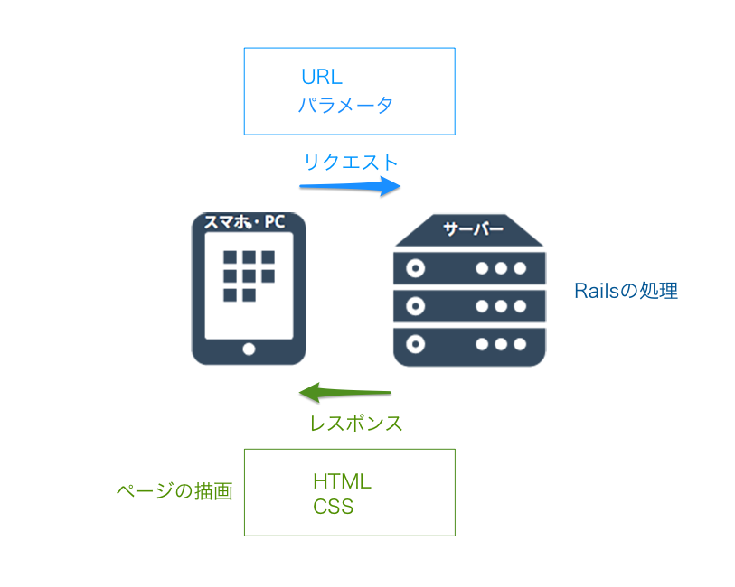
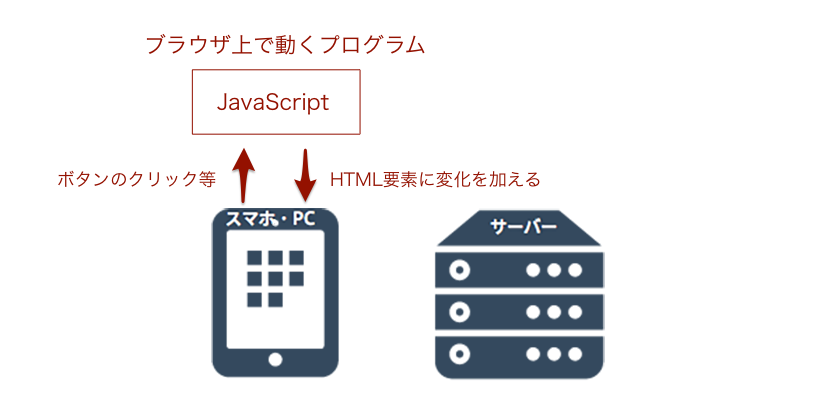
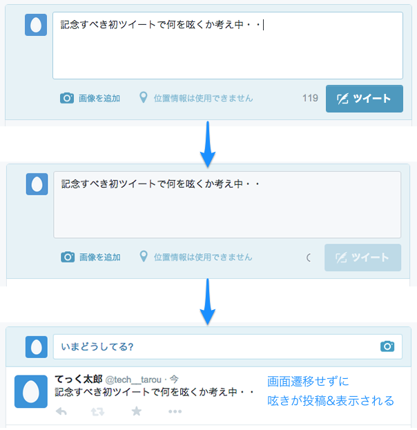
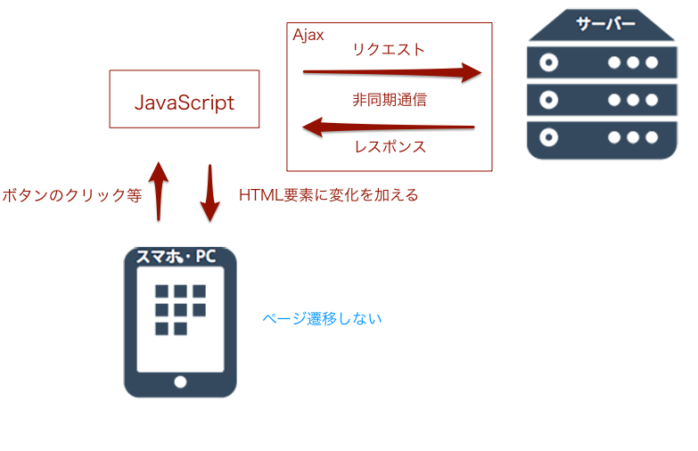

今まで扱ってきたRailsは、サーバで動くプログラムでした。Railsで作られたアプリケーションは、ブラウザからリクエストを受け取り、サーバでそれに応じた処理をし、レスポンス（HTML）をブラウザに返して表示させる、という流れで動いていました。

JavaScriptは、サーバでなく、ブラウザで動くプログラムです。ブラウザにサーバとやりとりさせることなく、HTMLの要素に変化を加えたりすることができます。

JavaScriptはRubyと同様にプログラミング言語の一つです。Rubyのように、計算や条件分岐や繰り返し等を行うことができます。今までは、ただのHTMLを画面に表示していただけでしたが、JavaScriptを取り入れることによって、表示しながらも、色々な処理を行うことができるようになります。
JavaScriptはブラウザに組み込まれている唯一のプログラミング言語であり、ブラウザ上の要素、HTMLやCSSを操作することができます。これにより「ボタンがクリックされたらメニューを表示する」や、「スクロールに応じて要素を表示する」といった処理を行うことができます。
TECH::MASTERにおいてもこれは使われています。例えば、TECH::MASTERのカリキュラム内の画像をクリックすると、画像が拡大されて表示されます。これは、「画像がクリックされたら拡大して表示する」といったプログラムがブラウザ上で動いているためであり、JavaScriptによって実装されています。
JavaScriptは、それ単体でサーバと通信することができます。ブラウザ上の表示をそのままで、すなわち、ページ遷移することなく、サーバにリクエストを送り、レスポンスを得ることができます。
例を挙げます。PicTweetでは、新しい呟きを投稿すると、そのリクエストがサーバに届き、サーバでツイートを作成し、投稿完了ページをレスポンスとしてブラウザに返していました。
これに対して、Twitterでは、新しい呟きを投稿しても、ページは一切遷移しません。しかし、確かに呟きは保存されており、新しい呟きが画面に表示されます。

ここでは、以下のことが行われています。
・JavaScriptがサーバにリクエストを送る
・サーバでリクエストに応じてツイートを作成する
・その結果（生成できたツイート）をレスポンスとしてJavaScriptに返す
・JavaScriptがHTMLを操作してその呟きを画面に追加する
このように、ブラウザとサーバの通信とは別に、JavaScriptが行う通信のことを非同期通信と呼び、これを実現する仕組みをAjaxと呼びます。

ページ遷移は、全てのHTML、CSSをもう一度読み込み直すため、時間がかかります。今回のように、何らかの操作（呟きの投稿）の前と後で、大して画面に差が無い場合は、ページ遷移して一から読み込み直すよりも、ページ遷移せずにJavaScriptで変更箇所のHTMLを操作してしまった方がユーザにとって快適です。そういった点が評価され、Ajaxは広く使われています。
JavaScriptはとても便利な一方で、奥が深く、使いこなせるようになるまでには十分量の学習が必要となります。
このカリキュラムでは、Railsを学ぶwebアプリケーションコースの発展カリキュラムとして、JavaScriptの必要最低限の基礎を学び、実際にwebアプリケーションに取り入れることができるようになるまでをサポートします。
それにより、簡単な機能の実現ができるようになるとともに、JavaScriptの基礎を理解することで、カリキュラム以上の発展的な内容に関しても、自分で調べることで解決できるようになることを目的としています。
上述の通り、JavaScriptはRubyと同様にプログラミング言語の一つです。
Rubyがそうであったように、ルールが存在し、決められた文法に従って書かなければ動きません。
このカリキュラムでは、必要最低限の文法を学びます。
実際にRailsアプリケーションにJavaScriptを取り入れて、簡単な機能を実装します。
jQueryはJavaScriptのライブラリであり、使うことによって、より簡単に、より豊かな効果をページにもたらすことができます。
そんな大変便利なjQueryを使って簡単なタブメニュー機能を実装します。
Ajaxを用いて、非同期通信によるメモアプリを実装します。
 大宅 誠人
大宅 誠人